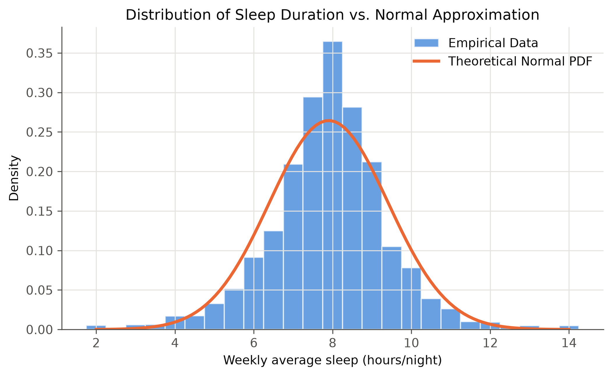
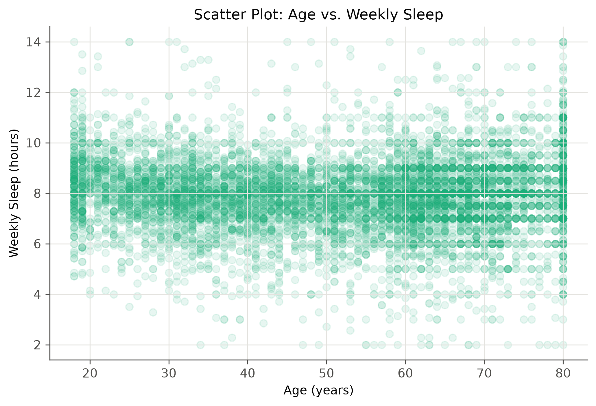
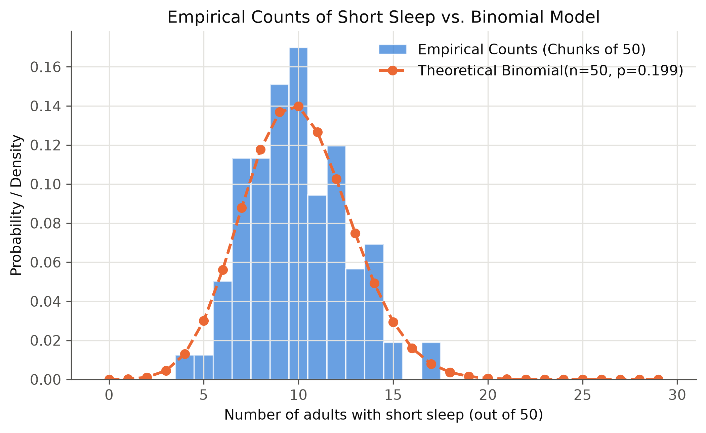

۱. رویدادها، احتمالات پایه و استقلال
در این فاز، متغیر تصادفی پیوسته «ساعت خواب هفتگی» و دو رویداد کلیدی تعریف شدند:
- رویداد A: فرد دارای «خواب کوتاه» (کمتر از ۷ ساعت در هفته) است.
- رویداد B: وضعیت مصرف سیگار فرد «سیگاری فعلی» است.
۱.۱. احتمالات حاشیهای و مشترک (تسک ۲ و الف.۴)
بر اساس فراوانیهای تجربی در نمونه تحلیلی (n=۷,۹۹۶):
- احتمال حاشیهای خواب کوتاه:
P(A) ≈ 0.1995
- احتمال حاشیهای سیگاری فعلی:
P(B) ≈ 0.1442
- احتمال مشترک:
P(A ∩ B) ≈ 0.0407
بررسی نقش وزنهای نمونهگیری (تسک الف.۴):
احتمال تجربی خام برای خواب کوتاه حدود ۱۹.۹۵٪ است، اما با اعمال وزنهای پیمایش (WTINT2YR) این احتمال در جامعه هدف ۱۹.۱۱٪ برآورد میشود. این تفاوت نشان میدهد که بیشنمونهگیری برخی گروهها (مثل سالمندان بالای ۶۰ سال) در صورت عدم اصلاح با وزنها، میتواند برآورد احتمال در سطح جمعیت ملی را دچار سوگیری کند.
۱.۲. احتمال شرطی و زیرگروهها (تسک ۳ و الف.۱)
با شرطیسازی رویداد خواب کوتاه روی وضعیت سیگار، متوجه میشویم که احتمال خواب کوتاه به شرط سیگاری بودن (P(A|B) ≈ 0.2819) به وضوح بالاتر از احتمال آن در افراد هرگز سیگاری (0.1791) است.
همچنین در بررسی زیرگروههای جنسیتی، مشاهدات نشان داد که مردان نسبت به زنان سهم بیشتری از خواب کوتاه را تجربه میکنند.
۱.۳. بررسی استقلال و قضیه بیز (تسک ۴ و ۹)
برای بررسی استقلال دو رویداد A و B حاصلضرب احتمالات آنها را محاسبه میکنیم:
P(A) × P(B) = 0.1995 × 0.1442 ≈ 0.0287P(A ∩ B) ≈ 0.0407
از آنجا که P(A ∩ B) ≠ P(A)P(B)، نتیجه میگیریم که این دو رویداد از نظر آماری مستقل نیستند و وابستگی نشان میدهند.
با استفاده از قضیه بیز، احتمال معکوس نیز محاسبه شد: اگر بدانیم فردی خواب کوتاه دارد، احتمال اینکه سیگاری فعلی باشد برابر است با P(B|A) ≈ 0.2038.
۲. گشتاورها و توزیعهای تئوریک
۲.۱. امید ریاضی، واریانس و تقریب نرمال (تسک ۶، ۷ و الف.۳)
برای متغیر تصادفی پیوسته «ساعت خواب»، امید ریاضی E[X] = 7.90 ساعت و واریانس Var(X) = 2.29 محاسبه شد.

شکل ۱: هیستوگرام مدت زمان خواب و برازش توزیع نرمال تئوریک.
تحلیل تقریب نرمال: هیستوگرام فوق نشان میدهد که هسته مرکزی توزیع خواب تقریباً متقارن است، اما در دمهای توزیع (Tails) انباشت داده وجود دارد که ناشی از کدهای کراندار ۲ (خواب زیر ۳ ساعت) و ۱۴ (خواب بالای ۱۴ ساعت) است. بنابراین، در حالی که تقریب نرمال برای هسته مرکزی جامعه معقول است، در مدلسازی مقادیر حدی (Extremes) دچار خطا میشود.
۲.۲. دو متغیر تصادفی و همتغییری (تسک ۸)
جهت بررسی ارتباط بین سن و ساعت خواب، کوواریانس و ضریب همبستگی محاسبه شد.

شکل ۲: نمودار پراکنش ارتباط بین سن و میانگین خواب هفتگی.
تحلیل کوواریانس: کوواریانس و ضریب همبستگی خطی پیرسون بین سن و ساعت خواب تقریباً برابر صفر هستند. نمودار پراکنش نیز تأیید میکند که هیچ روند خطی واضحی بین افزایش سن و تغییر یکنواخت مدت خواب در کل نمونه وجود ندارد.
۲.۳. مدل دوجملهای برای پیامد بالینی (تسک ۵ و الف.۲)
برای بررسی اینکه آیا پیامد دودویی «داشتن خواب کوتاه» از مدل دوجملهای پیروی میکند، نمونه تصادفی به دستههای مستقل ۵۰ نفری تقسیم شد.

شکل ۳: مقایسه شمارش تجربی خواب کوتاه در گروههای ۵۰ نفره با مدل دوجملهای.
تفسیر مدل دوجملهای: مقایسه شمارش تجربی (میلههای آبی) با توزیع تئوریک Binomial(n=50, p=0.199) (خط نارنجی) نشاندهنده انطباق بسیار بالایی است. دلیل این موفقیت، برقرار بودن دو پیشفرض اصلی مدل دوجملهای است: ۱) استقلال مشاهدات (به دلیل نمونهگیری تصادفی) و ۲) ثبات تقریبی احتمال p برای پیامد خواب کوتاه در کل نمونه.